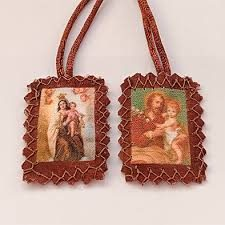
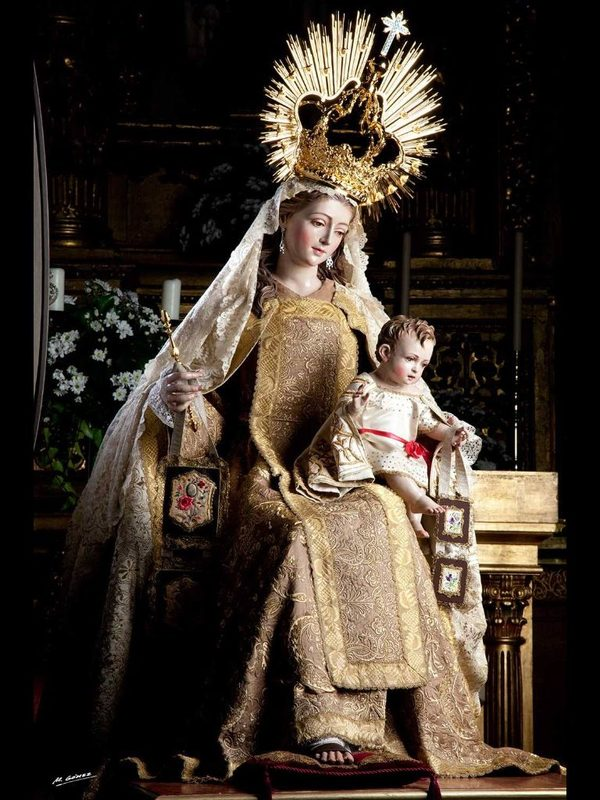
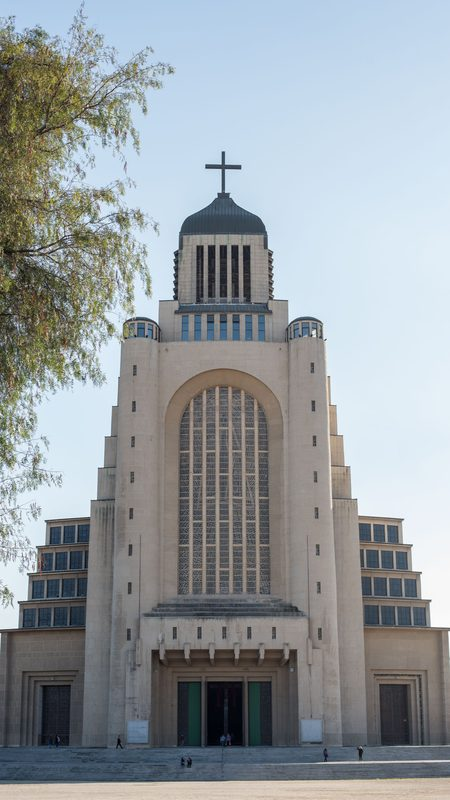

El Monte Carmelo y los Orígenes de la Devoción
El Monte Carmelo es una cordillera costera del norte de Israel, cuyo nombre en hebreo —Karmel— evoca la idea de un jardín o viña exuberante. Este lugar está impregnado de memoria bíblica: fue en sus laderas donde el profeta Elías desafió a los sacerdotes de Baal en el famoso duelo del fuego (1 Re 18), y fue allí también donde Elías contempló la pequeña nube que ascendía del mar, interpretada por la tradición cristiana como figura de María, la que traería la lluvia de la gracia sobre un mundo reseco. Esta conexión entre el Carmelo y el profetismo de Elías forjó una espiritualidad particular, centrada en la vida contemplativa, el desierto interior y la espera de Dios.
A partir del siglo XII, un grupo de peregrinos y ermitaños de Occidente, probablemente cruzados que regresaban de Tierra Santa o que decidían quedarse en ella, se instalaron en las grutas y cuevas del Monte Carmelo, adoptando la memoria de Elías como inspiración y eligiendo a María como patrona y señora de su nueva fraternidad. Hacia 1209, Alberto, patriarca de Jerusalén, redactó para ellos una regla de vida austera que constituye el embrión de la futura Orden del Carmen. La figura de la Virgen era tan central para estos primeros carmelitas que construyeron en el Carmelo una capilla dedicada a ella, considerada la primera iglesia mariana de la Tierra Santa cristiana.
Las invasiones sarracenas obligaron a los ermitaños del Carmelo a trasladarse a Europa hacia mediados del siglo XIII, asentándose primero en Chipre, Sicilia, Inglaterra y Francia. En este proceso de traslado y adaptación, la Orden fue tomando la forma de una orden mendicante similar a los dominicos y franciscanos, aunque conservando siempre su carácter contemplativo y su identidad profundamente mariana. La Virgen del Carmen pasó así del ámbito de un monte sagrado de Palestina a convertirse en una devoción de alcance universal.
La Aparición a San Simón Stock y el Escapulario
La tradición carmelita conserva como uno de sus momentos fundacionales la aparición que Nuestra Señora habría hecho a san Simón Stock el 16 de julio de 1251. Simón Stock, prior general de la Orden del Carmen en un momento especialmente difícil —la orden era cuestionada por las autoridades eclesiásticas y presionada para disolverse—, habría implorando durante años la intercesión de María. Según el relato que transmite la tradición, la Virgen se le apareció sosteniendo un escapulario marrón y le pronunció las palabras conocidas como la "promesa del escapulario": quien vistiera ese hábito pequeño no padecería el fuego eterno. Este acontecimiento, celebrado el 16 de julio, es el fundamento de la fiesta litúrgica de Nuestra Señora del Carmen.
Vinculado al escapulario existe también el llamado "Privilegio Sabatino", basado en una bula pontificia atribuida al papa Juan XXII (1322), según la cual la Virgen habría prometido liberar del Purgatorio, el primer sábado después de su muerte, a quienes vistieran el escapulario, observaran la castidad según su estado de vida y rezaran ciertas oraciones. Aunque la historicidad exacta de estos documentos ha sido debatida por los historiadores, la Iglesia ha aprobado pastoralmente la devoción del escapulario como signo válido de consagración a María y de confianza en su intercesión.
El Escapulario Carmelitano: Significado y Uso

El escapulario del Carmen es una prenda devocional que consiste en dos pequeños pedazos de tela marrón o parda unidos por cordones y colocados sobre los hombros, de modo que uno cuelgue sobre el pecho y otro sobre la espalda. Es una versión miniaturizada del hábito monástico carmelita, y su uso está documentado como forma de participación laical en el carisma de la Orden del Carmen. Para recibirlo, el fiel es investido con una ceremonia de imposición, y se compromete a llevarlo continuamente, a respetar la castidad según su estado de vida y a rezar cada día las oraciones propias de la devoción, especialmente el Oficio Parvo de la Virgen o, más comúnmente, cierto número de avemarías.
Teológicamente, el escapulario es interpretado como un signo visible de consagración a María: quien lo lleva declara que acepta a la Virgen como madre y señora, y que confía en su intercesión especial en el momento de la muerte. Esta dimensión escatológica —la promesa de asistencia en el tránsito final— ha sido el elemento más poderoso de la devoción a lo largo de los siglos, dando al escapulario una popularidad que superó con mucho los límites de la espiritualidad carmelita para convertirse en una práctica devocional extendida por toda la Iglesia. Los papas, los teólogos y los santos de diversas escuelas espirituales han llevado el escapulario del Carmen, reconociendo en él un símbolo de la maternidad espiritual de María.
Hoy en día, muchos fieles optan por sustituir la tela del escapulario por una medalla con la imagen de Nuestra Señora del Carmen, práctica tolerada pastoralmente pero que la Orden Carmelita no equipara plenamente a la investidura del escapulario de tela. La distinción no es meramente formal: el escapulario de tela subraya de manera más elocuente la participación en el hábito carmelita y en la identidad contemplativa que este entraña.
Arte e Iconografía

La imagen canónica de Nuestra Señora del Carmen la muestra con manto y túnica de color marrón —los colores del hábito carmelita—, sosteniendo en brazos al Niño Jesús y tendiendo con la otra mano el escapulario hacia los fieles. En muchas representaciones, el Niño Jesús también sostiene o muestra un escapulario, subrayando que la devoción carmelita es, en su raíz, cristocéntrica: María conduce a Cristo, y Cristo mismo avala el signo que su Madre ofrece. Algunas versiones muestran también almas del Purgatorio en la parte inferior de la imagen, que María rescata extendiendo hacia ellas el escapulario, alusión directa al Privilegio Sabatino.
En América Latina, la iconografía carmelita recibió una impronta peculiar. En Chile en particular, la imagen de la Virgen del Carmen adoptó rasgos solemnes de reina y protectora nacional, con corona y manto de aparato, reflejando el papel que la devoción desempeñó en la construcción de la identidad nacional chilena. Las esculturas y pinturas virreinales de la Virgen del Carmen que se conservan en los museos de Lima, Santiago y otras ciudades hispanoamericanas constituyen obras maestras del arte religioso barroco iberoamericano.
Patrona de Chile: Historia y Significado Nacional

La devoción a Nuestra Señora del Carmen arraigó profundamente en Chile desde los primeros años de la evangelización, pero alcanzó su carácter de símbolo nacional durante el proceso de Independencia. El general José Miguel Carrera, al frente del ejército patriota, consagró sus tropas a la Virgen del Carmen antes de varias batallas. Pero fue el general Bernardo O'Higgins quien, el 5 de abril de 1818, en la antesala de la Batalla de Maipú —enfrentamiento que aseguró definitivamente la independencia de Chile—, hizo el famoso voto de construir un templo en honor a la Virgen del Carmen si las armas patriotas resultaban victoriosas. La victoria llegó ese mismo día, y O'Higgins ratificó públicamente su promesa arrodillándose en el campo de batalla.
En cumplimiento de ese voto, se inició la construcción del Templo Votivo de Maipú, que hoy es uno de los principales santuarios marianos de Chile y lugar de peregrinación permanente. El Congreso chileno declaró formalmente a Nuestra Señora del Carmen "Patrona y Reina de Chile" y el 16 de julio se convirtió en fecha de celebración nacional. Esta vinculación entre la Virgen del Carmen y la identidad nacional chilena no tiene parangón en el mundo hispanohablante y convierte a Chile en el país donde la advocación carmelita ha adquirido mayor relieve cívico y patriótico, superando incluso su dimensión estrictamente religiosa para encarnar los valores de la nación.